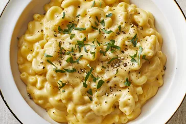

Macaroni and Cheese Recipe

Simple Macaroni and Cheese Recipe
The receipe below depicts the authentic Macaroni and Cheese from Italian cusine.
You can try the steps below to enjoy some delicious Macaroni and Cheese right in your house, plus it's easy and quick to prepare too.
Ingredients
- Store bought pasta
- olive oil
- garlic
- butter
- italian herbs and seasonings
- basic kitchen utenensils and condiments
- different types of cheeses
Steps to follow
- Boil Macaroni.
- Make a Roux.
- Add Cheese and Macaroni.
- Once the macaroni is finished cooking, drain and stir into cheese sauce until coated.